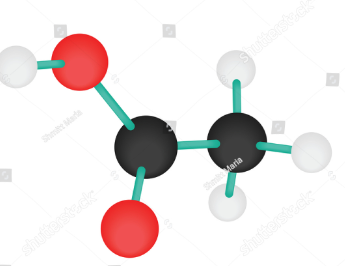

Senyawa Kimia Anorganik dan Organik
| No |
Gambar |
Catatan |
| Komponen Senyawa |
Detail |
Senyawa Anorganik |
| 1 |
|
HCl |
| Ciri-ciri: |
- Cairan asam, tidak berwarna.
- Mengeluarkan uap korosif.
- Sangat reaktif dengan logam.
|
| Penggunaan: |
- Pabrikasi bahan kimia.
- Pengolahan logam.
|
|
| 2 |
|
H2SO4 |
| Ciri-ciri: |
- Cairan pekat, kental, tidak berwarna.
- Bersifat korosif, oksidator kuat.
- Pelarut universal, menyerap air.
|
| Penggunaan: |
- Industri pembuatan pupuk.
- Pengolahan logam.
|
|
| 3 |
|
CaCO3 |
| Ciri-ciri: |
- Padatan putih, tidak larut dalam air.
- Komponen utama batu kapur.
- Reaktif dengan asam menghasilkan CO2.
|
| Penggunaan: |
- Pembuatan semen.
- Pengendapan karbon dioksida.
|
|
Senyawa Organik |
| 4 |
|
C6H12O6 |
| Ciri-ciri: |
- Padatan kristal, rasa manis.
- Larut dalam air.
- Sumber energi utama organisme.
|
| Penggunaan: |
- Produk makanan dan minuman.
- Industri farmasi.
|
|
| 5 |
 |
C2H4O2 |
| Ciri-ciri: |
- Cairan asam, bau tajam.
- Komponen utama cuka.
- Digunakan sebagai pengawet makanan.
|
| Penggunaan: |
- Pengawet makanan.
- Pembuatan asam asetat.
|
|
| 6 |
|
C8H10N4O2 |
| Ciri-ciri: |
- Padatan putih, rasa pahit.
- Stimulan sistem saraf pusat.
- Terkandung dalam kopi, teh.
|
| Penggunaan: |
- Kopi dan teh.
- Obat-obatan stimulan.
|
|